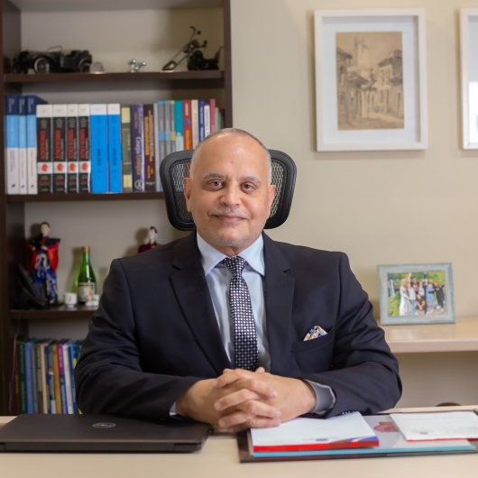

Quando procurar
O que tratamos
Falar sobre isso
Resposta pela equipe do Urocentro
Médico urologista · Porto Velho, RO
Urologia clínica e cirúrgica para homens e mulheres, com uma conversa franca sobre o que você sente e o que pode ser feito. Consultas, exames e cirurgias no Urocentro, no Centro de Porto Velho.

Dr. Cid Scarpa
Áreas de atuação
A urologia cuida do sistema urinário de homens e mulheres e do sistema reprodutor masculino. Toque em uma região para ver as doenças e os tratamentos.
Esquema ilustrativo, fora de escala
Próstata aumentada · HPB
A ThuLEP (enucleação da próstata com laser de túlio) é uma cirurgia endoscópica para o crescimento benigno da próstata. O acesso é feito pela uretra, sem incisões na pele, e o tecido que obstrui a passagem da urina é removido com o laser.
Perguntas do consultório
Frases que o Dr. Cid ouve toda semana e que atrasam o diagnóstico.
Primeira consulta
Sem pressa e sem constrangimento. Você entende cada etapa antes de decidir.
Você escolhe o motivo e fala com a equipe pelo WhatsApp para marcar o horário.
Conversa detalhada sobre sintomas e histórico, e exame físico quando indicado.
Pedido dos exames necessários, como laboratoriais, de imagem ou cistoscopia.
Tratamento clínico, acompanhamento ou cirurgia, explicados com riscos e recuperação.
Agendamento
Marque o que você quer tratar e toque em enviar. O WhatsApp abre com o texto preenchido, e você pode editar antes de mandar.
Nada do que você marca aqui é salvo. Evite enviar dados de saúde sensíveis por mensagem; eles serão tratados na consulta.